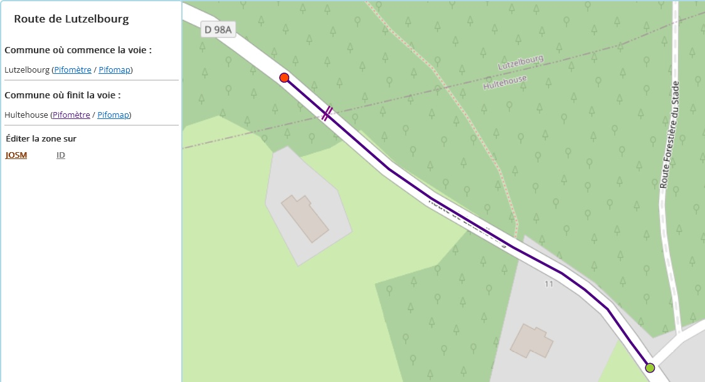

C'est une route ou une rue nommée (avec un tag name sur OSM) croisant au moins une limite administrative, donc débordant sur au moins 2 communes.
Exemple ci-dessous : la Route de Lutzelbourg, majoritairement située sur la commune de Hultehouse, déborde sur la commune de Lutzelbourg.

Il faut cliquer sur la voie pour afficher ses informations dans le panneau de gauche.
Rond vert : extrémité dans une commune où la voie est rapprochée – c'est-à-dire que son nom existe à la fois dans OSM et dans le fichier Topo ou la BAN de la commune.
Rond rouge : extrémité dans une commune où la voie n'est pas rapprochée.
Frontière : marque un franchissement de limite administrative.
Souvent, le nom attribué est bien celui de la voie dans une commune A, mais il a été tagué sur un tronçon trop long qui déborde sur une commune B. Or, il y a de fortes chances pour que cette voie porte un nom différent, ou ne porte pas de nom, dans la commune B.
Parfois, le name identique est justifié des deux côtés de la frontière : quand les deux communes ont effectivement choisi le même nom, ou pour les noms d'autoroutes par exemple ("Autoroute du Soleil"...).
Mais dans tous les cas, il est toujours utile et important de couper la voie au niveau de toutes les limites administratives qu'elle traverse. Cela permet par exemple de pouvoir exporter le plan d'une ville avec des voies qui s'arrêtent bien aux frontières.
Couper la voie
Dans tous les cas, il faut couper la voie quand elle traverse une frontière. Dans votre éditeur préféré (ID, JOSM...), ajoutez un noeud à l'intersection entre la voie et la frontière, puis coupez le chemin à cet endroit.
Vérifier et mettre à jour les noms
Pour vérifier si le nom de la voie à cheval est bien référencé parmi les voies de la commune A, et celles de la commune B, vous pouvez consulter :
Côté vert : A priori, ce côté de la voie est bon. Vérifier quand même (notamment que le nom est sur la bonne rue, au bon endroit).
Côté rouge, étudier au moins ces possibilités :
La carte se met à jour automatiquement tous les quarts d'heure environ. Les cas corrigés disparaissent.
Deux interrupteurs et une ampoule permettent de filtrer les voies à cheval sur la carte.
Le filtre "petits dépassements" permet d'afficher ou masquer les voies qui dépassent de la limite administrative de moins d'un mètre.
Le filtre "grands dépassements" permet d'afficher ou masquer les voies qui dépassent de la limite de plus d'un mètre.
L'ampoule "Routes de..." donne une idée de voies faciles à corriger : elle permet d'afficher les voies dont le nom contient celui de l'une des communes traversées. Exemple : la "route de Lutzelbourg" déborde sur la commune de Lutzelbourg alors qu'à cet endroit, elle devrait s'appeler autrement (ou ne pas avoir de nom).
Vous avez envie de corriger des voies à cheval mais vous ne savez pas où donner de la tête ? Lancez l'un des trois jeux de dés, tout en haut à droite de la page Pifodrome.
Les dés vert-vert emmènent vers une voie à cheval où les deux extrémités sont vertes. Ce sont les cas les plus simples, car il suffit souvent de vérifier que les noms sont bons des deux côtés, et de couper le chemin à la frontière.
Les dés vert-rouge emmènent vers une voie à cheval où une extrémité est verte et l'autre rouge. Difficulté intermédiaire : il faut couper la voie et au moins régler le problème côté rouge.
Les dés rouge-rouge emmènent vers une voie à cheval où les deux extrémités sont rouges. Ce sont les cas difficiles, car en plus de couper la voie, il faut comprendre le problème et le corriger des deux côtés de la frontière.